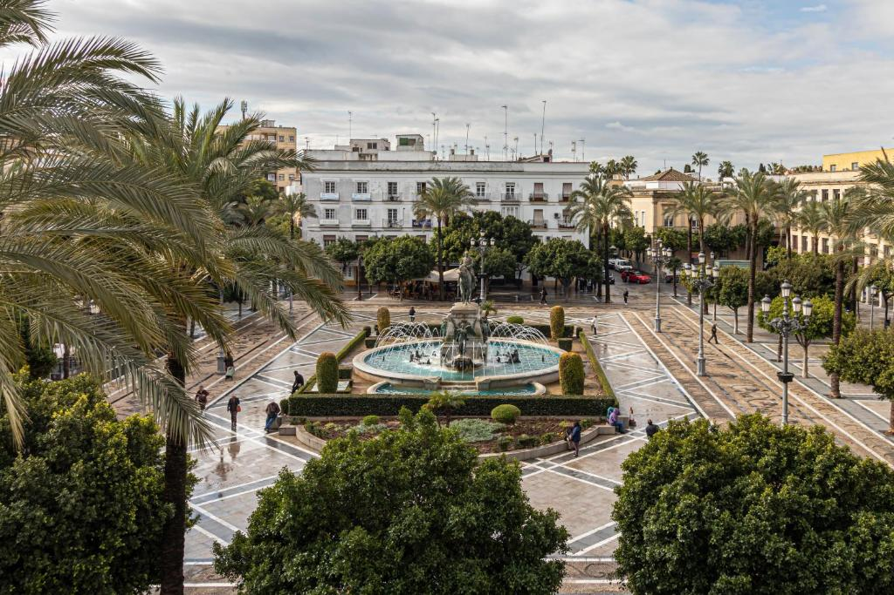

Ciudad del Vino, el flamenco, el caballo y el motor.
Jerez de la Frontera es una ciudad andaluza situada en la provincia de Cádiz, conocida mundialmente por su vino jerez o “sherry”, su tradición ecuestre y el flamenco. Con un casco histórico lleno de iglesias, palacios y bodegas centenarias, Jerez combina patrimonio, cultura y gastronomía. Además, su clima suave, sus fiestas —como la Feria del Caballo— y la hospitalidad de su gente la convierten en un destino atractivo para quienes buscan conocer la esencia del sur de España.

Historia
La ciudad de Jerez de la Frontera, situada en la provincia de Cádiz, tiene una historia muy antigua que se remonta a los fenicios, quienes ya comerciaban en la zona. Más tarde fue ocupada por los romanos, que la integraron en la provincia de la Bética, y después pasó al dominio visigodo.
En el siglo VIII, con la llegada de los musulmanes, Jerez —entonces llamada Sherish— alcanzó gran desarrollo agrícola y urbano. De esta época procede gran parte de su trazado histórico y su tradición vitivinícola.
En 1264, durante la Reconquista, la ciudad fue tomada por Alfonso X el Sabio, quedando como “de la Frontera” por su posición estratégica entre territorios cristianos y musulmanes. A partir de entonces prosperó gracias a la agricultura, la ganadería y, especialmente, la producción de vino, que dio origen al famoso Jerez o Sherry, muy demandado en Europa desde el siglo XVI.
Durante la Edad Moderna y Contemporánea, Jerez mantuvo un importante desarrollo económico ligado al comercio internacional del vino, convirtiéndose en una de las ciudades más prósperas de Andalucía. Hoy es conocida por su patrimonio histórico, su tradición ecuestre y flamenca, y su prestigioso vino, reconocido mundialmente.

Tradiciones
Jerez de la Frontera es una ciudad donde las tradiciones forman parte esencial de la vida cotidiana. A lo largo del año, sus calles se llenan de celebraciones que combinan devoción, arte, música y convivencia. Estas costumbres reflejan la identidad jerezana y muestran la profunda relación de la ciudad con la cultura andaluza, el flamenco, el caballo y la gastronomía local. Cada fiesta tiene su propio carácter, pero todas comparten un espíritu abierto y participativo que atrae tanto a vecinos como a visitantes.
SEMANA SANTA
La Semana Santa de Jerez de la Frontera es una de las más destacadas de Andalucía, considerada por muchos como la segunda más relevante tras la de Sevilla por la calidad artística de sus pasos, la magnitud de sus cortejos y la enorme participación ciudadana. En la ciudad procesionan más de 40 hermandades, cada una con una larga historia vinculada a sus barrios y a las parroquias que las vieron nacer.
Durante la semana, miles de jerezanos salen a la calle acompañando a sus imágenes durante su recorrido por el casco histórico de la ciudad. El ambiente combina solemnidad, arte y tradición, convirtiendo esta celebración en uno de los momentos más esperados y vividos del año en Jerez.

FERIA DEL CABALLO
La Feria del Caballo, celebrada cada primavera en Jerez de la Frontera, es una de las fiestas más importantes de Andalucía. Su origen se remonta a las antiguas ferias ganaderas, donde se comerciaba con caballos y ganado. Hoy es una celebración que combina tradición, elegancia y ambiente festivo. En el recinto ferial del Parque González Hontoria, desfilan jinetes y amazonas, se realizan exhibiciones ecuestres y las casetas ofrecen música, gastronomía y baile. Es una fiesta muy característica por su luz, sus farolillos, los trajes de flamenca y su relación histórica con el mundo del caballo, símbolo de la identidad jerezana.

ZAMBOMBA
La Zambomba de Jerez es una celebración tradicional que tiene lugar durante el tiempo de Navidad y es una de las expresiones culturales más representativas de la ciudad. Su origen está en reuniones vecinales que se celebraban en patios y corrales, donde la gente cantaba villancicos acompañados por palmas, panderetas y la típica zambomba. Con el tiempo, estas reuniones se hicieron más grandes y se extendieron por peñas flamencas, tabancos y plazas.
Hoy en día, la Zambomba jerezana es una fiesta llena de convivencia, cante y compás, donde se mezclan villancicos tradicionales con toques flamencos. Ha sido reconocida como Bien de Interés Cultural, y cada año atrae a miles de personas que buscan vivir una Navidad auténtica y popular en Jerez.

Puntos de interés
Jerez de la Frontera es una ciudad llena de encanto y tradición, donde cada rincón refleja su rica historia y cultura. Desde sus monumentos históricos y plazas llenas de vida, hasta sus bodegas y espacios naturales, Jerez ofrece lugares que sorprenden por su belleza y autenticidad, invitando a descubrir la esencia de Andalucía en cada paso.
CATEDRAL DE JEREZ
La Catedral de Jerez es un majestuoso edificio que combina estilos gótico, barroco y neoclásico. Su impresionante interior, con altares, capillas y una torre que domina la ciudad, refleja la riqueza artística y espiritual de Jerez, siendo un punto de referencia histórico y cultural.


ALCÁZAR DE JEREZ
El Alcázar de Jerez es una fortaleza de origen árabe que combina torres, murallas y jardines cuidadosamente diseñados. Pasear por sus patios y recorrer sus almenas permite viajar al pasado y descubrir la historia medieval de la ciudad, disfrutando de vistas únicas y rincones llenos de encanto.

PLAZA DEL ARENAL
La Plaza del Arenal es el corazón vibrante de Jerez, rodeada de edificios históricos, bares y terrazas. Es el lugar perfecto para pasear, disfrutar de un café al aire libre o contemplar la vida cotidiana de la ciudad, siendo punto de encuentro de locales y visitantes por igual.
Organización territorial
Actualmente Jerez se ecnuentra dividido en 7 distritos, con distinta extensión y población.
| Número | Distrito | Barrios | Población | Extensión | Densidad (hab/km²) |
|---|---|---|---|---|---|
| 1 | Distrito Norte | 24 | 25817 | 12 km² | 2151,42 |
| 2 | Distrito Oeste | 20 | 28867 | 6,98 km² | 4135,67 |
| 3 | Distrito Centro | 32 | 34190 | 2,90 km² | 11789,66 |
| 4 | Distrito Sur | 25 | 32679 | 11,55 km² | 2829,35 |
| 5 | Distrito La Granja | 19 | 30765 | 4,57 km² | 6731,95 |
| 6 | Distrito Las Delicias | 35 | 38598 | 6,71 km² | 5752,30 |
| 7 | Distrito Rural | 26 | 7270 | 1143,52 km² | 6,36 |